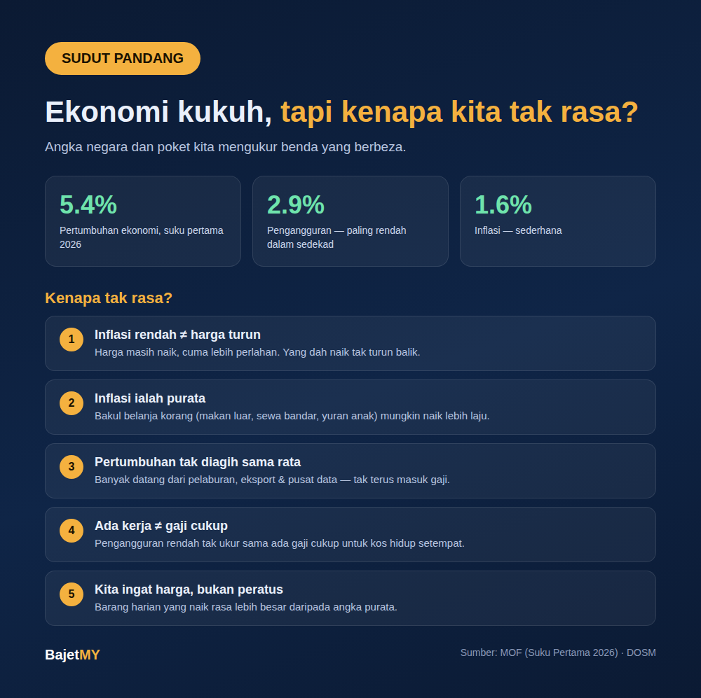

Kalau ikut berita, ekonomi Malaysia tengah elok. Suku pertama 2026, ekonomi berkembang 5.4%. Kadar pengangguran turun ke 2.9%, paling rendah dalam sedekad. Inflasi pula sederhana, sekitar 1.6%.
Tapi tanya kawan-kawan, ramai jawab benda sama: "Tak rasa pun."
Dua-dua betul. Masalahnya, angka negara dan poket kita mengukur benda yang berbeza.

1. Inflasi rendah bukan bermakna harga turun
Inflasi 1.6% maksudnya harga masih naik, cuma lebih perlahan. Harga yang dah naik tahun-tahun lepas tak turun balik. Contohnya, kalau nasi lemak dulu RM3 dan sekarang RM5, ia akan kekal RM5 — inflasi rendah cuma bermakna ia tak naik laju lagi.
2. Inflasi ialah purata — bakul korang mungkin lain
Kadar inflasi dikira berdasarkan "bakul" barang dan perkhidmatan purata isi rumah seluruh negara. Tapi bakul setiap orang lain-lain. Kalau sebahagian besar belanja korang pergi pada makanan di luar, sewa rumah di bandar, atau yuran anak, kos korang mungkin naik lebih laju daripada angka purata.
3. Pertumbuhan ekonomi tak diagih sama rata
KDNK naik 5.4% bermakna jumlah keseluruhan aktiviti ekonomi negara bertambah — termasuk pelaburan syarikat, eksport dan projek besar seperti pusat data. Sebahagian besar pertumbuhan ini tak masuk terus ke gaji setiap orang, dan kesannya sampai pada masa dan kadar yang berbeza ikut industri.
4. Kerja ada, tapi soalan sebenar: gaji cukup?
Pengangguran rendah bermakna ramai orang ada kerja. Tapi ia tak ukur sama ada gaji tu cukup untuk kos hidup di tempat korang tinggal. Sebab tu Menteri Ekonomi sendiri menyebut Bajet 2027 perlu fokus pada kenaikan gaji dan jurang pendapatan.
5. Kita ingat harga, bukan peratus
Otak kita tak fikir dalam peratus. Kita ingat harga barang yang kita beli selalu — minyak, barang dapur, makan tengah hari. Bila barang-barang harian ni naik, ia rasa jauh lebih besar walaupun inflasi keseluruhan rendah.
Jadi apa boleh buat?
Kita tak boleh ubah angka negara, tapi kita boleh ukur "inflasi peribadi" sendiri:
- Bandingkan belanja bulan ni dengan bulan sama tahun lepas — kategori mana yang naik paling banyak?
- Fokus pada kategori terbesar — potong 10% pada kategori besar lebih berkesan daripada potong 50% pada kategori kecil.
- Pastikan gaji naik sekurang-kurangnya ikut kos korang sendiri, bukan ikut angka inflasi purata, bila berbincang kenaikan gaji.
- Semak gaya hidup — sebahagian rasa sempit datang daripada komitmen yang naik bersama gaji. Kami ada tulis tentang ini dalam artikel "Gaji Naik, Tapi Kenapa Rasa Makin Sempit?".
Ringkasan
Ekonomi boleh kukuh dan poket boleh rasa sempit pada masa yang sama. Angka negara ialah purata seluruh negara; poket kita ialah pengalaman peribadi. Cara paling praktikal ialah ukur kos hidup sendiri, dan urus berdasarkan angka tu — bukan berdasarkan headline.
Sumber
- Kementerian Kewangan Malaysia — Ekonomi Malaysia Berkembang 5.4% Pada Suku Pertama 2026
- Jabatan Perangkaan Malaysia (DOSM) — Indeks Harga Pengguna
Sudut Pandang ialah tulisan renungan untuk membuka perbincangan, bukan nasihat kewangan peribadi. Keadaan setiap orang berbeza.